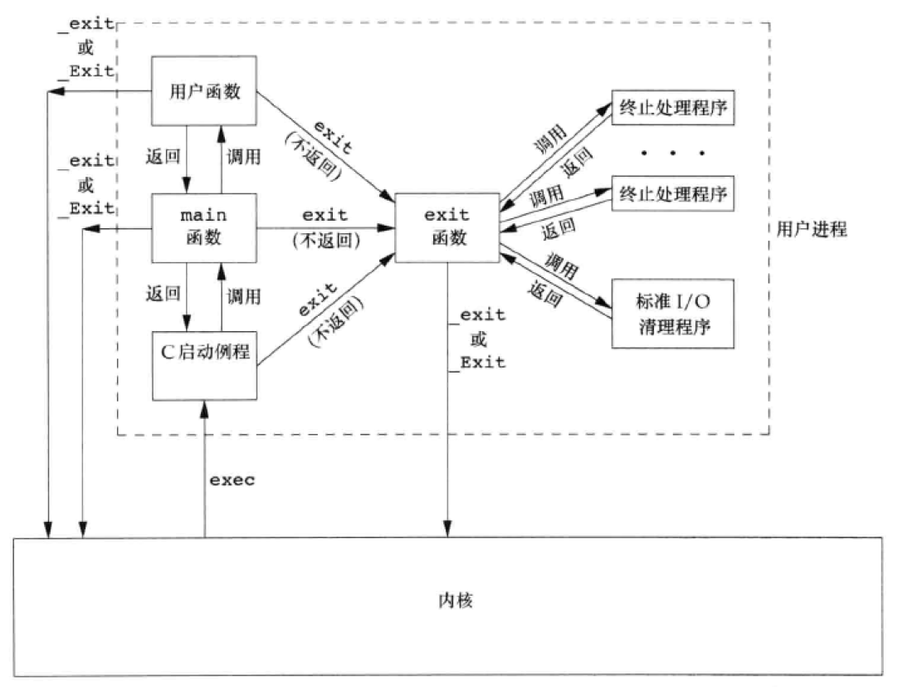
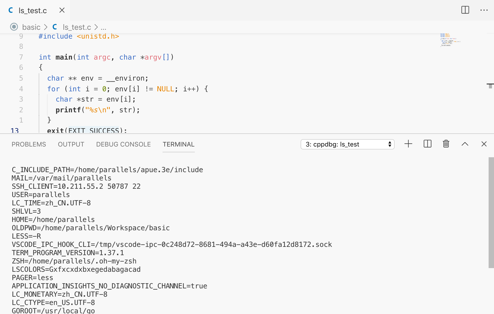
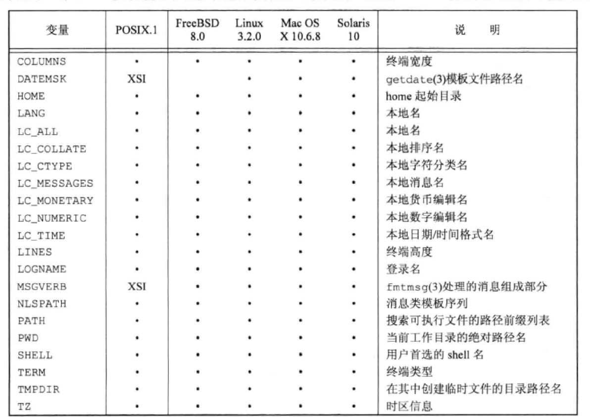
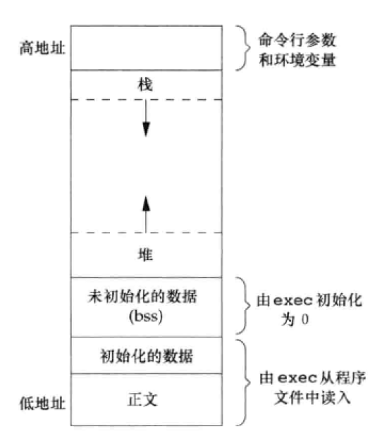

此为第七章笔记
main函数
- 内核使用函数
exec执行C程序时，会先启动一个特殊的启动例程。 - 启动例程从内核中获取命令行参数和环境变量值
- C编译器调用连接编辑器。
- 由连接编辑器设置，可执行程序文件将此启动例程指定为程序的起始地址。
进程终止
正常终止
- 从
main返回 - 调用
exit - 调用
_exit或_Exit - 最后一个线程从其启动例程返回
- 从最后一个线程调用
pthread_exit
exit 函数总是执行一个标准I/O库的清理关闭操作：对于所有打开流调用 fclose 函数。三个退出函数都带一个整型参数，称为 终止状态（exit status）。
退出函数
atexit 函数可以注册程序退出时执行的清理函数
1 |
|
输出如下
1 | first exit handler |

异常终止
- 调用
abort - 接到一个信号
- 最后一个线程对取消请求做出相应
命令行参数
通过 main 的参数 argc 和 argv。由于其最后以 NULL 结尾，所以可以按照如下遍历
1 | for (i = 0; argv[i] != NULL; i++) |
获取环境变量
使用全局变量 __environ 或 environ ，定义在 <unistd.h> 中，称为 环境指针
1 |
|
列出了一大堆环境变量

更好的方式是使用 getenv 函数
1 |
|
以下为一些环境变量列表

C程序的存储空间布局
- 正文段：CPU执行的机器指令部分。只读。
- 初始化数据段
- 未初始化数据段（bss）
- 栈
- 堆

使用 size 命令查看程序的相关数据
1 | > size a.out |
setjmp和longjmp
书中的例子比较长，所以我在网上找了一个简单的例子。这两个函数的功能是可以跨函数跳转，可以实现类似于 try ... catch 的功能。
1 |
|
输出为
1 | divisioning by zero |
资源限制
getrlimit 和 setrlimit 略
PDFp195
书后习题
printf 何时被真正输出
如果是在命令行输出，为行缓冲方式，则是遇到换行符的时候。如果是重定向至文件中的，为全缓冲方式，则要等到标准I/O清理执行时才被输出。
修改 atexit 的原型
1 | typedef void Exitfunc(void); |